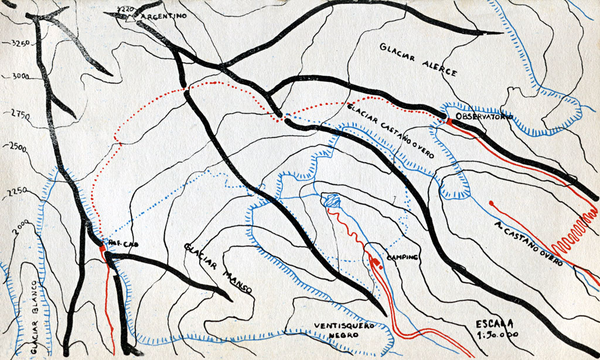

- Volver a
- Inicio
- Revista Digital
- Libros
Restauración Fotográfica: Centro Cultural Argentino de Montaña, Natalia Fernández Juárez
AUTORES: Jose Maria Iglesias y Mario Della Janna
COLABORACIÓN: Lilian Canova, Sandra Della Janna y Vojslab Arko
EDITORIAL: Ediciones Mundo Nuevo, colección Alpamayo, dirigida por Frank Memelsdorff.
AÑO: Primera Edición, diciembre de 1959
FORMATO: 11 x 17 cm.
PÁGINAS: 178
IDIOMA: Castellano
NOTA: La Guía del Nahuel Huapi era la primera de una serie de la colección Alpamayo que nunca se publicaron y sus títulos eran los siguientes:
- Andinismo y campamentos en el Parque Nacional Los Alerces (Esquel y El Bolsón).
-
Andinismo y campamentos en Córdoba.
-
Andinismo y campamentos en Mendoza y San Juan.
-
Andinismo y campamentos en el noroeste argentino.
-
Andinismo y campamentos en la zona de los grandes lagos (San Martin, Viedma y Argentino).

Tapa del libro Andinismo y Campamentos en el Parque Nacional Nahuel Huapi.
Autor: Jose Maria Iglesias y Mario Della Janna
Editorial
Hace un decenio el andinismo y el campamentismo se practicaban en nuestro país casi en familia. Los entusiastas eran pocos y se conocían, al menos en una misma región, todos. Se solía reconocer el paso de un amigo por la marca de su suela en una picada.
Hoy todas las sendas de la zona Bariloche presentan superposiciones infinitas de rastros de suelas. El número de visitantes de la región ha crecido en forma geométrica. En igual forma se han multiplicado las excursiones, travesías y ascensiones.
Como era de prever, este aumento cuantitativo ha corrido parejo con una progresiva falta de comunicación entre los acampantes, entre los andinistas o, más aun, entre componentes de ambos grupos. El objeto de esta guía es, ante todo, suplir esta falta de contacto que impide un mayor aprovechamiento de la suma de experiencias hechas y reunir someramente la información acumulada por varias generaciones de andinistas y acampantes. No creemos que la edición de esta guía marque el fin de la época "romántica", en que todo era descubrir nuevas travesías o rutas de ascensión, en que la falta de información, convertía hasta al principiante en un explorador. Más bien pensamos que, al delimitar lo conocido, se fijan con más claridad los nuevos campos de lo desconocido y por explorar. También en el Parque Nacional del Nahuel Huapi queda mucho por descubrir aun.
Frank Memelsdorff

Mapa de itinerarios en el Parque Nacional Nahuel Huapi.
Libro: Andinismo y Campamentos en el Parque Nacional Nahuel Huapi de Jose Maria Iglesias y Mario Della Janna
Prólogo
La tarea de redactar una guía de montaña no está ni estará incluida entre los trabajos fáciles y remunerativos. En Europa, la abundancia de cartas geográficas y geológicas, así como la literatura a ese respecto, los innumerables puntos de referencia (casas, caminos, alpages, etc.), y el hecho de que casi todos los rincones y accidentes geográficos posean nombre propio (Col des Hirondelles, Tete du Lion, Couloir Mummery, etc.), hace que gran parte del trabajo se limite a la recolección de datos, lo que, aun así, es una tarea nada envidiable. Fácil es imaginar lo que representa en nuestro cercano sur el tratar de organizar, siquiera sea con alguna aproximación, los pocos datos dispersos sobre una zona si no inexplorada, al menos poco habitada y con gran escasez de medios de comunicación y transporte.
La observación personal y el testimonio oral son, excepción hecha de los anuarios del Club Andino Bariloche, los únicos materiales a los que el estudio puede remitirse, ya que aun los mapas oficiales adolecen de errores fundamentales que los tornan poco menos que inutilizables para quien pretenda alejarse, siquiera sea varios kilómetros, de las rutas frecuentadas por el tráfico comercial y turístico.
En tales condiciones, no podríamos abrogarnos la pretensión de editar una guía de "tipo europeo", y es esta, por lo tanto, una recopilación de las rutas más o menos "normales" o más o menos exploradas en un universo de cumbres, valles y lagos que siempre deparan sorpresas al baqueano. Dos clases de enamorados de la montaña se acercan año tras año a estas regiones:
El excursionista o acampante, quien, dadas las características de la zona, no es el clásico excursionista europeo, turista a pie sino que, en la mayoría de los casos, la brava espesura del bosque y el tumultuoso curso de los torrentes, así como la falta de caminos carreteros, lo convierten en una especie de explorador en pequeña escala, un verdadero caracol que debe llevar a cuestas su casa y el alimento para muchos días. En el escudo heráldico de estos "mochileros", si lo tuvieran, debería inscribirse como motivo de honor el machete, instrumento inapreciable e imprescindible que, solo el, permite adentrarse en la selva más o menos virgen, a través de un bosque de cuya impenetrabilidad dan buena idea los girones de vestimenta dejados como ofrenda al dios de la montana.
El andinista, trepador de rocas o hielos, que también se diferencia de su hermano mayor europeo. La escalada "pura", en efecto, solo puede llevarse a cabo en un número muy limitado de torres o cumbres de la región; en general, el acceso, por sus dificultades, es la parte que más tiempo requiere, y por eso la piqueta o el martillo de roca deben aguardar durante muchas horas o aun días el momento de entrar en juego, cediendo turno al machete y viajando a pie o a caballo, cuando esto es posible junto con su dueño, convertidos en lastre incomodo e inútil.
Por ello el andinista de nuestro sur es una acabada mezcla de los dos arquetipos anteriores, los que solo muy raras veces logran diferenciarse en "estado puro". A ellos —a los baqueanos de la región que nos han abierto un sinnúmero de rutas, y a los novicios, sin mucha experiencia, pero con una gran dosis de entusiasmo—, dedicamos este trabajo.
Jose Maria Iglesias

Mapa de itinerarios en el Parque Nacional Nahuel Huapi.
Libro: Andinismo y Campamentos en el Parque Nacional Nahuel Huapi de Jose Maria Iglesias y Mario Della Janna
Descripción de la Zona
La región montañosa que tiene como centro la población de San Carlos de Bariloche —y a la que casi con exclusividad haremos referencia en esta guía— posee características propias, y algunas comunes a toda la cordillera austral, que trataremos de sintetizar en esta introducción.
Los cordones montañosos se ubican en dirección norte-sur, es decir longitudinalmente, y aunque no existan formaciones definidas en cordilleras, como en la zona central de los Andes, desde el punto de vista geográfico y aun fitológico podemos distinguir tres grandes formaciones que de este a oeste se alinean constituyendo la cordillera preandina, la cordillera subandina y la cordillera de los Andes.
Bueno es recordar aquí que el término "precordillera" no es aplicable en estas latitudes, puesto que la precordillera de la zona de Cuyo —de edad geológica mucho mayor que la cordillera andina— no excede en su extremo sur la latitud de Tunuyan en la provincia de Mendoza.
Infinitos lagos cruzan transversalmente la región montañosa, ocupando con sus aguas profundas y frías los antiguos valles glaciares, sembrados de depósitos morenicos y bloques erráticos que se alzan como centinelas altivos abandonados por los hielos pleistocenos en su reciente retirada.
El Clima
Párrafo aparte merece el clima de esta región, de tipo predominantemente marítimo y por lo tanto poco riguroso, con temperaturas mínimas que no bajan de — 10°C. en invierno (con excepción del cerro Tronador y algunas cumbres y filos), y con máximas que proporcionan veranos relativamente frescos.
Los vientos que en forma casi continua soplan del O. (N.O. - S.O.) forman parte de los famosos cuarenta bramadores. Fríos y constantemente saturados de humedad van depositando su carga de lluvia o nieve a medida que atraviesan la cordillera, llegando secos, pero impetuosos aun, a la estepa. La enorme diferencia de precipitaciones entre una y otra vertiente puede reflejarse en un escueto dato: en la laguna Frias la precipitación media anual alcanza a 3.000 mm., mientras que en Bariloche solo llega a 500 mm. La violencia de estos vientos del oeste es siempre grande, especialmente en primavera, en que adquieren caracteres huracanados.
En cambio, brillan por su ausencia las tormentas eléctricas, rarísimas en la zona y solo producto de los vientos del este, fríos y secos, que suelen visitarnos en otoño provocando a veces un gran descenso de temperatura, con la consiguiente nevada fuera de estación. A causa de la latitud, las horas de luz son muchas en verano y pocas en invierno, y por esta misma razón los faldeos y paredes que miran al norte son más secos y, generalmente, están más libres de nieve. Sin embargo, hay un dicho muy común entre los pobladores, producto de la dura experiencia "cada valle y cada cerro tienen su clima propio", que suele resultar cierto gran parte de las veces, puesto que son múltiples y a veces imprevisibles los factores que influyen en los fenómenos meteorológicos.
Pared Norte del Cerro Lopez.
Libro: Andinismo y Campamentos en el Parque Nacional Nahuel Huapi de Jose Maria Iglesias y Mario Della Janna
Ascensiones en el Cerro Catedral
CAMPANILE ESLOVENO
Ruta normal: (única hasta la fecha, Bertoncelj-Jerman).
Tipo de ascensión: Roca granodioritica. Artificial y libre.
Dificultad media: V.
Elementos necesarios: Artificial. Agregar algunas cuñas.
Peligros objetivos: Ninguno.
Peligros subjetivos: Muy expuesto. Roca buena.
Ruta: Desde el col al este del Campanile por bloques fáciles hasta una fisura entre un bloque y la pared propiamente dicha. Por la fisura (III sup.) hasta una laja cuyo comienzo es algo delicado (IV).
Se recorre a horcajadas una escama horizontal hasta que se ensancha dejando entre ella y la pared una fisura balcon. Desde alii asegura el segundo. Por la fisura del artificial, oblicua ascendente, hasta la base del techo (Al). En esta fisura pueden necesitarse curias. No fiarse demasiado de las ya colocadas. El techo se supera por un paso en artificial (All); un restablecimiento sobre las manos (IV) nos deja en la base de una corta chimenea (III), al superar la cual nos hallamos en una ancha terraza ("la plaza"). Desde allí, corre una fisura en sobre pendiente (V), que puede superarse con ayuda de un paso de hombros. Otra fisura (IV), lleva hasta una pequeña plataforma donde comienza la ultima, la más delicada de las tres, cuya salida puede superarse en dulfer. Una plataforma inclinada remata la pared este al pie de un muro liso de tres metros que se flanquea por la derecha sobre una escama (II), para entrar en una chimenea corta y fácil (II) que nos deja en el filo. Se recorre este (II) hasta el pie del monolito de la cumbre, que hay que flanquear por la derecha sobre roca lisa pero con buenos apoyos para los pies. En la mitad de esta travesía, bajar un paso para continuar luego hasta una fisura-chimenea cuya entrada es muy expuesta (V). Luego una corta trepada lleva a la cumbre. (Desde el filo a la cumbre un largo de soga.) Descenso en rapell. Al llegar a "la plaza" desviar a la izquierda para evitar el filo. Dos rapelesde 20 mts., nos dejan en la entrada de la escama horizontal. Desde allí un último descenso en cuerda doble "de Luxe", nos lleva al filo.
Desnivel: Desde el filo aproximadamente 90 mts.
Duración: Del refugio Frey al filo 1.30 horas; del filo a la cumbre, variable. Con la fisura ya equipada aproximadamente 3 horas para una cordada bien entrenada.
Catedral, Campanile Esloveno.
Libro: Andinismo y Campamentos en el Parque Nacional Nahuel Huapi de Jose Maria Iglesias y Mario Della Janna
TORRE PRINCIPAL
Ruta normal: (Fischer-Kammerer).
Tipo de ascensión: Roca granodioritica. Escalada libre.
Dificultad: media IV.
Elementos necesarios: Soga de 40 mts. Mosquetones; coordines de rapell.
Peligros objetivos: Ninguno.
Peligros subjetivos: Absolutamente vertical pero con magníficos lugares de descanso y seguro. Roca de inmejorable calidad.
Ruta: Desde el col a la derecha de la torre por una fisura cómoda (II), luego una travesía a la derecha (III). Desde alli hasta la base de la pared por bloques fáciles. Una fisura (IV) que conduce a un nicho con clavo. Salir por un paso de flanco a la izquierda (IV) hasta una fisura paralela a la anterior (III) y hasta una plataforma. Una fisura (II) hasta un hombro. Se bajan dos metros y se sube hasta una plataforma grande. En el extremo derecho de la plataforma hay dos fisuras. Tomar la de la izquierda (IV) hasta el clavo. Luego cabalgando sobre la escama de la derecha, travesía en péndulo hacia la otra fisura, convertida en chimenea (IV). Se sube por esta superando un pequeño techo (IV). Luego hasta el hombro por roca fácil. Subir al filo y luego en adherencia por la laja inclinada (IV); al llegar a la pared una fisura facilita la travesía en dulfer hacia la izquierda. Desde allí ascender por el cable, ayudándose en la última parte con la fisura a la izquierda (III). Descenso en 4 rapells.
Duración: Hasta la base de la torre: 1 hora partiendo del refugio Frey.
Tiempo de escalada: 1 hora.
Altura de la torre: 120 mts.
Catedral, Torre Principal.
Libro: Andinismo y Campamentos en el Parque Nacional Nahuel Huapi de Jose Maria Iglesias y Mario Della Janna
Ascensiones en el Cerro Tronador
RUTA DE CLAUSSEN (No confundir con la travesía Claussen en el pico Internacional.)
Tipo de ascensión: Glaciar.
Dificultad media: Varia según la época del año.
Elementos necesarios: Soga, piqueta, grampones. En verano muy avanzado, tal vez clavos de hielo.
Peligros objetivos: Caída de seracs.
Ruta: Poco puede decirse de esta ruta tan variable. Desde el camping Tronador tomar el filo que lo separa del ventisquero Negro por el bosque, o por las canaletas de acarreo que no se recomiendan por las caídas de piedras. Por el filo, luego de superar algunas terrazas inclinadas, hasta la ruptura del glaciar, y por esta buscar la ruta hasta superarla evitando los "hoyos" de roca fácilmente visibles desde abajo y donde la caída de seracs es un peligro continuo. Una vez superada la cascada de seracs, oblicuar a la izquierda en dirección al refugio. Esta ascensión, muy interesante para glaciaristas expertos, es mucho mas fácil y menos peligrosa en primavera. No se recomienda efectuarla inmediatamente después de una nevada, porque entonces se producen aludes.
Duración: del camping al refugio CAB 3 horas.
Desnivel: Desde el camping, aproximadamente 1300 mts.
Tronador. Esquema de Filos y Cumbres.
Libro: Andinismo y Campamentos en el Parque Nacional Nahuel Huapi de Jose Maria Iglesias y Mario Della Janna
Tronador, ruta de Claussen.
Libro: Andinismo y Campamentos en el Parque Nacional Nahuel Huapi de Jose Maria Iglesias y Mario Della Janna
RUTA "DEL CAMPING"
Tipo de ascensión: Roca volcánica muy disgregada Escalada libre.
Dificultad media: II muy expuesto.
Elementos necesarios: Soga.
Peligros objetivos: Caída de piedras.
Peligros subjetivos: Roca podrida, sumamente friable. Muy expuesto. La falta de dificultad técnica puede inducir a error al novicio. Debe tenerse en cuenta que ya se han producido varios accidentes graves.
Ruta: Desde el camping Tronador subir por el bosque de la izquierda orográfica (filo del camping) hasta una canaleta muy visible desde el valle. Por la canaleta de acarreo y escalones rocosos, hasta un gendarme rocoso. Veinte metros arriba del gendarme, la canaleta se divide en dos. Tomar la de la izquierda llegando al filo. El filo mismo se halla cortado por un paredón rocoso impracticable por lo que, descendiendo unos metros a la izquierda, se entra en un couloir-chimenea que lleva hasta una plataforma con lenga rastrera. Desde alli se asciende por terrazas inclinadas cortadas por escalones de roca hasta el pie de una pared. Alli pueden tornarse dos rutas. A la derecha, hacia el faldeo que domina el valle Castaño Overo. No se aconseja por lo expuesto. A la izquierda, hasta que el paredón disminuye de altura; luego una corta escalada (III) nos lleva a otra pequeña terraza inclinada (15 m). Para superar este muro corto pero expuesto se recomienda encordarse. Desde allí por una terraza de pedregullo se flanquea hacia la izquierda para luego volver a la derecha ascendiendo hasta salir al filo. Este es ancho y permite caminar por lomas de acarreo hasta llegar a los seracs del glaciar Castaño Overo, que se sortean por el flanco junto a un paredón de roca. Luego, dejando el glaciar a la derecha, se asciende por el neve poco agrietado hasta empalmar con la ruta Castaño Overo-refugio Tronador.
Tronador, ruta del Camping.
Libro: Andinismo y Campamentos en el Parque Nacional Nahuel Huapi de Jose Maria Iglesias y Mario Della Janna
PICO ARGENTINO
Ruta normal.
Tipo de ascensión: glaciar.
Elementos necesarios: Piqueta, grampones, soga.
Peligros objetivos: Ninguno.
Peligros subjetivos: Moderada inclinación. Roca podrida si se aborda la pared.
Ruta: Desde el refugio hasta la depresión (dos a tres horas). Desde la depresión subir directamente hasta la base de la pared de roca. Luego flanquear hacia la derecha siguiendo el borde inferior de la pequeña rimaya. Al llegar al final del paredón, entrar en la cara sur superando sin dificultad la rimaya y a vecesun muro de hielo de un par de metros no totalmente vertical. Luego, directamente o en zig-zag, hasta el filo cumbrero.
Variante: Puede abordarse la pared de roca un poco antes de llegar a la cara sur, alli donde disminuye de altura y una pequeña chimenea lleva hasta cerca del filo.
Duración: Ida y vuelta desde la depresión, 2 horas.
Desnivel: Desde la depresión: 200 mts.
Variante: Cara sur. Antes de entrar en la depresión, tomar hacia la derecha y abordar directamente la pared, que tiene la misma pendiente en toda su altura (45° a 50°). Se recomienda llevar clavos de hielo. Desnivel: Aproximadamente 350 mts.

Cerro Tronador. Foto: Augusto Vallmitjana

En los hielos. En la Depresión, entre el Pico Argentino y el Principal. Foto: Augusto Vallmitjana
Pico Internacional del cerro Tronador
Ruta: normal (Claussen).
Tipo de ascensión: Glaciar con pasos de roca. Dificultad media: Glaciar.
Elementos necesarios: Soga, piqueta, grampones, mosquetones.
Peligros objetivos: Caída de piedras. En primavera aludes de nieve.
Peligros subjetivos: Roca podrida, con hielo adherido. Mediana exposición.
Ruta: Desde el refugio hasta el col, entre el Internacional y el Argentino (depresión). Dos a tres horas.
Desde allí subir oblicuamente retrocediendo hacia la entrada de la depresión para tomar el filo en su punto más fácil, luego de cruzar una pequeña rimaya.
Por el filo hasta la base de la pared del Promontorio, que se bordea hasta su terminación (único clavo de roca, fijo).
Luego tallar en travesía oblicua ascendente (hielo de couloir en verano) más o menos 15 m., para luego ascender directamente hasta la cumbre del promontorio (un clavo de hielo, fijo, en la mitad. Dos largos de soga). Inclinación de la pendiente 50°. Desde el promontorio descender al filo de unión con el pico y recorrerlo hasta la base. Subir un largo de soga por hielo con pedregullo para luego atravesar horizontalmente a la izquierda hasta la base de la más baja de dos canaletas que conducen a la arista. Esta travesía está muy amenazada por aludes de piedra que en verano son casi continuos.
Por la canaleta hasta la arista y en ésta, por bloques inestables de roca podrida apenas soldados por el hielo, se llega en verano hasta una rampa de firn que conduce cómodamente a la cumbre. (Arista 3 largos de soga, rampa uno.) En primavera, la arista está cubierta por hongos de hielo que es necesario romper con la piqueta.
Duración: Ida y vuelta desde la depresión: 4 horas.
Desnivel: Desde la depresión 470 m. Desde el refugio CAB 1.070 mts.
Nota: La travesía Claussen, muy usada anteriormente, se ha abandonado en la actualidad debido a la falta de nieve. Por lo tanto ha dejado de ser una ruta normal y sólo pueden tentarla en primavera los buenos glaciaristas
Variante: Ruta chilena (Meiling). No es una variante sino una ruta nueva. Hasta el col Reichert, ver "Pico Chileno". Desde el col Reichert se faldea el pico Internacional por la vertiente del glaciar Casa Pangue un centenar de metros hasta la base de una canaleta de fin de primavera y de hielo en verano, que permite alcanzar el extremo occidental del Trono de Hielo. Desnivel: Desde el col Reichert 175 mts.
Tronador, Pico Internacional (Anon).
Libro: Andinismo y Campamentos en el Parque Nacional Nahuel Huapi de Jose Maria Iglesias y Mario Della Janna
Tronador, Pico Anon.
Libro: Andinismo y Campamentos en el Parque Nacional Nahuel Huapi de Jose Maria Iglesias y Mario Della Janna
Índice
Prologo.................................................................... I. Información general sobre la zona del II. Refugios y picadas............................................. III.Travesías en verano......................................... IV. Travesías con esquíes...................................... V. Ascensiones........................................................ Apéndices................................................................ |
9
29 61 93 99 157 |
Publicidad del libro 'Andinismo y Campamentos en el Parque Nacional Nahuel Haupi' en la contratapa del libro 'Hielo Continental. Andinismo y exploración en los hielos patagónicos'
Libro Relacionado:
- Hielo Continental. Andinismo y Exploración de los Hielos Patagónicos
Área Restauración Fotográfica del CCAM: Natalia Fernández Juárez
Es nuestra misión dar a conocer la Cultura de Montaña Argentina y por lo tanto es prioritario que si es utilizado nuestro material visual, acuerden con la institución su uso. Si están interesados en el material fotográfico del CCAM, le sugerimos que se contacten a: info@culturademontania.org.ar
Todo el material fotográfico del CCAM es restaurado y publicado en alta resolución.

{kind=link}
{kind=link}
{kind=link}
{kind=link}
{kind=link}
{kind=link}
{kind=link}
{kind=link}
{kind=link}
{kind=link}